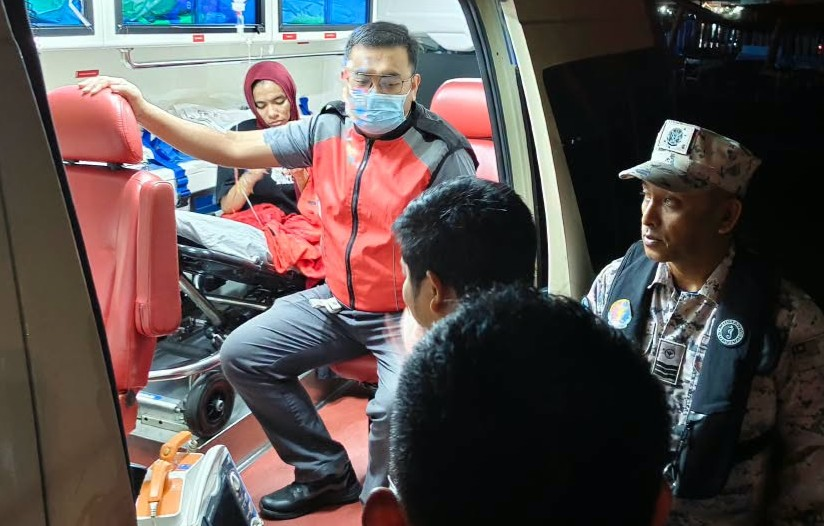
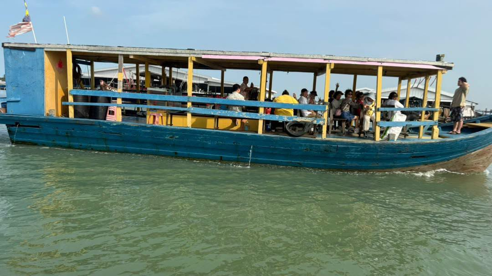
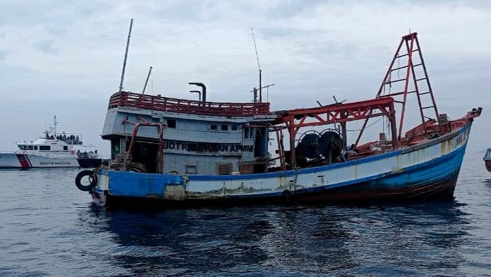
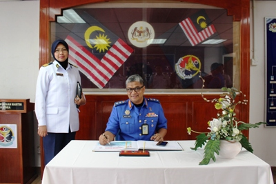

Carilamat

Laman Web Rasmi Kerajaan Malaysia Portal Rasmi


Pautan portal rasmi berakhir dengan .gov.my
Sekiranya anda melihat pautan selain .gov.my, segera tutup halaman itu walaupun ia menyerupai portal rasmi!
Portal yang selamat menggunakan HTTPS
Periksa ikon kunci mangga (

Agensi Penguatkuasaan Maritim Malaysia memastikan keselamatan dan kedaulatan Zon Maritim Malaysia 24 jam sehari, 7 hari seminggu.
Terkini
Ikuti perkembangan terbaharu operasi, penguatkuasaan dan aktiviti Maritim Malaysia.



Perkhidmatan Kami
Keselamatan di Laut

Penguatkuasaan

Penguatkuasaan

Pengawasan
Alam Sekitar

Operasi Khas
Sokongan
AMSAS
Pautan Pantas
Media Sosial
Pautan Agensi